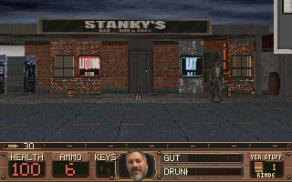

Stanky's Bar & Grill Play it right here

The first visit pulls about 65 MB, then your browser keeps it.
Open in its own tab
Click the screen to grab the mouse. Esc gives it back.
Fill 'er up Download station
Builds are made from the source by GitHub Actions.
WIN
Windows, standalone
One EXE. No install. Runs from anywhere.
SETUP
Windows, installer
Start-menu shortcuts and an uninstaller.
WEB
Play in browser
Nothing to install. Runs on this page.
APK
Android
Thumb stick, fire, jump, duck, and a rind button.
The builds are unsigned. Windows SmartScreen will ask once; Android needs “install unknown apps” allowed for your browser or file manager. Every release · Source
Hickston County Armory
Route sheet Chapter dossier
Two bits a song Jukebox
Now playingPick a record.
Forty-second cuts from the game's own soundtrack.
Holler board
Read before operating Field manual
Keyboard & mouse
| WASD + mouse | Move and aim |
|---|---|
| Shift J Z | Run, jump, crouch |
| Mouse 1 / Mouse 2 | Fire / alt fire |
| E Space middle click | Use, open, rescue |
| 1–9 0 - = wheel | Weapons |
| R | Reload |
| 8, hold fire | Light the stick; let go to throw |
| C B M | Pork rinds, beer, moonshine |
| Q / F | Pick an item / use it |
| Tab | County map |
| F6 / F9 / F5 | Quicksave, quickload, save slots |
| F11 F4 F12 | Fullscreen, music, screenshot |
Gamepad
| Left stick / right stick | Move / look |
|---|---|
| Right trigger / left trigger | Fire / alt fire |
| A / B | Jump / crouch |
| X / Y | Reload / use |
| Bumpers | Previous / next weapon |
| Stick click | Run |
| D-pad up, left, right | Rinds, beer, moonshine |
| D-pad down | Use the picked item |
| Start / Back | Pause / county map |
| In menus | D-pad moves, A picks, B backs out |
Touch
FireUseAlt
NextJumpDuck
RindBeerShineMenu
Left thumb walks. Drag anywhere on the right half to aim. The buttons show up the first time a finger lands on the screen, and stay out of the way on a keyboard.